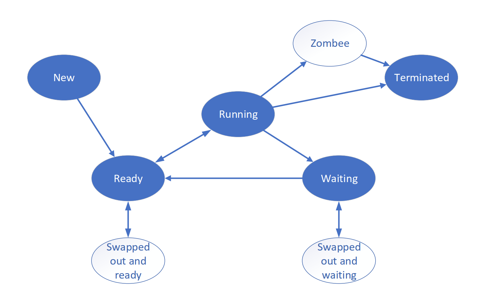
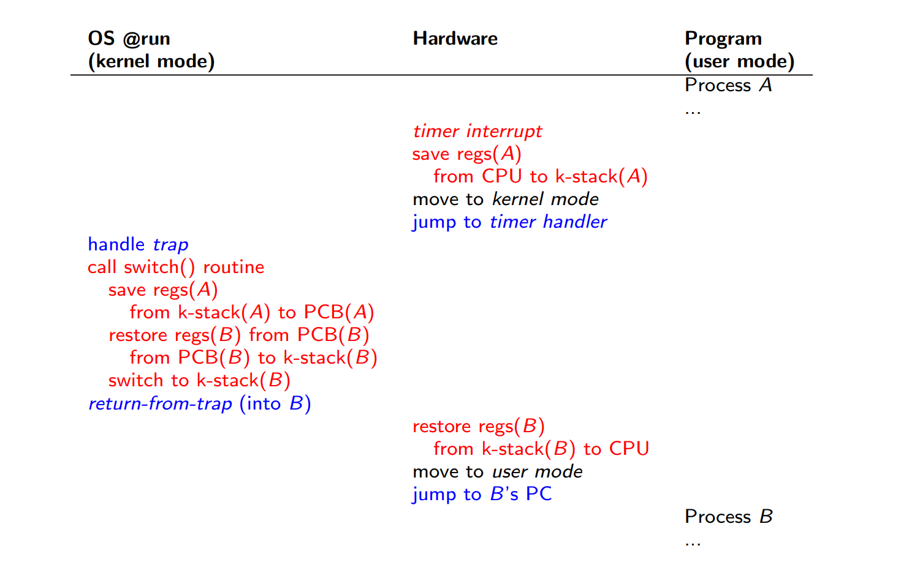

CH01
- A program that acts as an intermediary between a user of a computer and the computer hardware.
- OS is a resource allocator; OS is a control program.
- Virtualization; Concurrency
CH02
- API
- System Call
- Definition
- parameters: Registers, Memory block, Stack
- execute: Trap, trap-handler and return-from-trap
- trap-handler
- restore context: Kernel stack
- Type of System Calls
- Process Control
- File Management
- Device Management
- Information Maintenance
- Communication
- Protection
- OS Structure
- Simple Structure
- Monolithic
- More Complex
- Layered
- Microkernel
- Moduless
- Hybrid
- Simple Structure
CH03
- Process Memory Layout
- Text: Program code
- Data: Global variables
- Heap: Dynamically allocated memory
- Stack: Local variables, function parameters
- Process States
- New
- Ready
- Running
- Waiting/Blocked
- Terminated
- 
- PCB: Core data structure storing process state
- Time Sharing OS: context switch
- 
- Scheduling Queues
- Job Queue: All processes.
- Ready Queue: Processes ready to execute.
- Device Queue: Processes waiting for I/O.
- Scheduler
- Long-term scheduler: Controls degree of multiprogramming
- Short-term scheduler: selects which process should be executed next and allocates CPU
- Medium-term scheduler: Swapping
- Process Termination Type
- Normal
- Abnormal
- Zombie
- Orphan
- IPC
- Shared Memory
- Message Passing
CH04
- Thread have its own:
- Stack
- Registers
- Threads share:
- Code
- Data
- Files
- Multithreading Models
- User Thread
- Kernel Thread
- Threading Models
- M:O
- O:O
- M:M
- Two Level Models
fork()andexec()- Thread Cancellation
- Asynchronous cancellation
- Deferred cancellation
- Signal Handling
- TLS
- Implicit Threading
- Scheduler Activations
- LWP
- upcalls
CH05
- Schedule Timing
- Running -> Waiting: Non-Preemptive
- Running -> Ready
- Waiting -> Ready
- Process terminates: Non-Preemptive
- Dispatcher
- Dispatch latency
- Common Scheduling Criteria
- CPU Utilization
- Throughput
- Number of processes completed per time unit
- Turnaround Time
- Total time from submission to completion
- Waiting Time
- Time spent waiting in the ready queue
- Response Time
- Time from submission to first response
- Burst Time, Arrival Time
- Simple Scheduling Algorithms
- FCFS
- SJF
- Priority
- Preemptive SJF
- RR
- Multilevel Queue
- Multilevel Feedback Queue (MLFQ)
- Rules (x5)
- Multiple-Processor Scheduling
- Asymmetric Multiprocessing - SQMS
- Symmetric Multiprocessing - MQMS
CH06
- Requirements
- Mutual Exclusion
- Progress
- Bounded Waiting
- Software Solution
- Peterson's Solution
- Bakery Algorithm
- Hardware Support
- Interrupts
- Test-and-Set
- Compare-and-Swap
- Fetch-and-Add
- Semaphore
wait()signal()
- Monitor
CH07
- Deadlock Characterization
- Mutual Exclusion
- Hold and Wait
- No Preemption
- Circular Wait
- Methods for Handling Deadlocks
- Deadlock prevention
- Deadlock avoidance
- Deadlock detection
- Recovery from deadlock
- Resource-Allocation-Graph Algorithm
- Contd
- Banker's Algorithm
- Contd
- Detect Algorithm
CH08
- Binding Time
- Compile Time
- Loading Time
- Execution Time
- Dynamic Loading & Linking
- Eternal Fragmentation / Internal Fragmentation
- Free Space Management
- Best-fit
- Worst-fit
- First-fit
- Next-fit
- Calculation!
- Virtual Address = VPN + offset
- 2^offset = Page Size
- Max Page Count = 2^PFN
- Memory Size = 2^PFN * Page Size
- PTE: What VPN Points to in Page Table = PFN + other bits
- Use VPN to search PT to get PTE
- EAT
- Definition
-
- Page Size Selection Considerations
- Internal Fragmentation: Small
- Page Table Size/Page Faults: Large
- IO Overhead: Large
- Locality|Granularity Control: Small
- TLB Reach|TLB Size: Large
- Structure of the Page Table
- Hybrid Approach: Paging and Segments
- Multi-Level Paging
- Hashed Page Tables
- Clustered Page Tables
- Inverted Page Tables
CH09
- Backing Store, Demand Paging
- Page Fault Handling
- Basic Page Replacement
- Algorithm
- OPT
- FIFO
- Bélády’s Anomaly
- LRU
- LRU Approximation Algorithms
- Reference bit
- Additional-Reference-Bits Algorithm
- Second-chance algorithm
- Allocation of Frames
- Fixed Allocation
- Equal Allocation
- Proportional Allocation
- Priority Allocation
- Global vs. Local Replacement
- NUMA
- Fixed Allocation
- Thrashing
- Excessive page faults → Low CPU utilization; OS responds by adding more processes, worsening thrashing
- Locality Model
- Working-Set Model
- Working-Set Window
- Working-Set Size
- PFF
- Copy-on-Write
- Memory-Mapped Files
CH10
- Moving-head Disk Mechanism
- Track
- Sector
- Cylinder
- Platter
- Read-write head
- DIsk I/O Time
- Seek time
- Rotation delay
- Transfer time
- Scheduling Algorithms
- FCFS
- SSTF
- SCAN
- C-SCAN
- LOOK/C-LOOK
- SPTF (ignored)
- RAID
- RAID 0,1,1+0,0+1,4,5
CH11
- Hard Links / Soft Links
CH12
- Allocation Method
- FAT
- Contiguous allocation
- Linked allocation
- Indexed allocation
- FCB/Inode
CH13
- Pulling
- Interrupts
- DMA